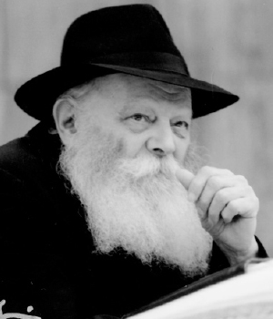

The Gimmel Tammuz Paradox: Everything Was Done – It’s All Up to US
A point from the weekly D’var Malchus for Parshas Shlach with a relevant message. * Why didn’t the almonds blossom without flowers, why didn’t Yehoshua allow the hail of stones to finish the job, and why didn’t the Rebbe Rayatz go free on Gimmel Tammuz?

Little Gershom was very upset that the fathers of some of his friends were involved in a terrible dispute. Last night he was unable to sleep until his mother promised him that Moshe would win. This afternoon he heatedly explained to all his friends what his mother told him before he went to sleep: “Moshe is a man of G-d and he says what Hashem tells him and does not say anything on his own. Whoever argues with him will certainly lose in the end.”
Ever since the earth opened up there had been many developments: the story with the fire pans, the covering of the altar, the great plague and Aharon ending it. Gershom curiously followed the events for he did not want to miss a single detail. He wanted to know, to understand, and of course, to update his friends.
Today, his mother explained to him that Hashem told Moshe that each tribe would write its name on a stick. On the stick of their tribe, it would say “Aharon.” The stick of the chosen tribe would miraculously flower and that would finally end the dispute. Gershom already knew whose stick would blossom.
In the morning all the Jewish people came and Gershom met many of his friends. Moshe took out all the sticks and they all saw how the stick that had “Aharon” written on it had blossomed. The flowering of the stick did not excite Gershom as much as the way it had blossomed. His father explained that the almonds grew in stages, just like they grow on a tree. The rate of its growth was slow; they grew slowly during the night.
Gershom wondered why Hashem did it this way and his father explained, “The miracle comes from Hashem who is above the world. The selection of Aharon also comes from above; this is what Hashem decided and that’s that. But since Hashem wants His decision, which transcends the world, to penetrate into the reality of the world, the miracle of the almonds also unfolded in a way that is consistent with the nature of this world.”
“So, if I understood correctly, that means that there will no longer be a dispute and Aharon and his sons will be the priests forevermore,” said Gershom.
“Exactly,” said his father, and he added, “Not only won’t there be any dispute, but from now on, there can no longer be the possibility of a dispute.”
STOP THE SUN!
CONTINUE THE WAR!
A unit of soldiers marched toward the battle. Yehoyada, a warrior since his youth and known to be fearless, marched silently alongside his fellow soldiers. The sudden mobilization and especially the effort of the previous night had taken their toll. Yehoyada knew his fellow soldiers were as exhausted as he was, but he made the effort to look alert so as not to weaken the others.
That’s that, we have passed Gilgal. The sun has risen and the war will soon begin, he thought. He suddenly felt a slap on his shoulder, “Yehoyada, my brother, where are you? Wake up from your reverie; now is not the time for that, we are already at war.”
Yehoyada musters the last of his strength and does all he can to strike at the enemy. He runs, gasping for breath up the hill of Beis Choron, with his hand seeming to move on its own and many bodies falling to the right and left of him. The enemy flees in all directions but his arms hurt and his feet falter. The sun continues to move toward sunset. The soldiers forget their exhaustion but in their heart of hearts they wish for a big miracle to instantly end this difficult battle.
Then it happened. Large hailstones began falling on the enemy like rain. Yehoyada and his friends stopped and looked upward in astonishment. “It’s a miracle!” they said excitedly. “Hashem is fighting on our behalf and killing our enemies.” They spontaneously broke into a joyous dance which released their tension.
The celebration did not last long. The rain of stones stopped and word spread quickly in the camp: Yehoshua commanded us not to rest but to continue fighting! Along with the order came the information that Yehoshua had stopped the sun in order to enable the battle to continue.
Yehoyada was wiped out. He hadn’t eaten in nineteen hours. How long could he continue fighting without a break? But what most concerned him and gave him no rest was the question: What is happening now? Miracle or no miracle? Is Hashem helping us or not? Why did Hashem stop the hail of stones and not finish off the enemy? As for Yehoshua, the Nasi Ha’dor, if he can do wonders on the scale of stopping the sun, why didn’t he continue the deadly rain?
Relying on Yehoshua, Yehoyada and his comrades continued fighting. They had no dissident thoughts against Yehoshua, G-d forbid. They could tell that the battle was ending with a complete victory.
Yehoyada suddenly “got it.” Of course, Yehoshua could continue the hail of stones, but that was not the point. Hashem wants us to achieve the victory on our own. “If I could run over to Yehoshua now and ask him why we need to fight” – thought Yehoyada – he would answer me something along the lines of, “You need help? You’ll get it! And if you need the sun, I will stop it for you, but you should know that the G-dly desire is that you should accomplish it. Do all that you can and you will be successful.”
Yehoyada doesn’t become disconcerted. He stretches, takes a deep breath, and begins running quickly. He feels younger than ever. His submissiveness to Yehoshua’s order infuses him with a feeling of satisfaction and calm. With every passing moment Yehoyada realizes he is in the midst of a historic event. The miracle of stopping the sun would be inscribed in the history of the Jewish people. Not just the story, but the lesson too.
Jewish children in future generations would be taught this story and would understand that if, in the midst of battle, questions arise and things are not understood, they would have to remember that Hashem and the Nasi Ha’dor are always with us. If it looks like a retreat, that is only because the Nasi did his part and gave us the ability to take over. That’s how it works.
BIG MIRACLES,
WITHIN NATURE
Fishel felt that the world had crashed around him. Since Purim he had sensed that something big was going to happen but he preferred to think it would not happen that soon. He reviewed in his mind the farbrengen that had taken place on Purim of that year and immediately felt goose bumps throughout his body.
Every Chassid who was present at that farbrengen would never forget that frightening sight when the Rebbe Rayatz stood up, opened his shirt, exposed his heart, and thumped with his fist over his heart. Then he cried out to the Chassidim, telling them to throw themselves into the fire rather than send their children to the communist public school. Everyone saw the “guests” in the room who transcribed every word. The Rebbe clearly alluded to severe developments and said he took this upon himself.
Since that farbrengen, Fishel lived under constant tension for he knew it was just a matter of time. Now, with the news about the arrest of the Rebbe, Fishel was beside himself with anguish. He felt dizzy and barely ate. He said a great deal of T’hillim with copious tears and hoped to hear good news.
After a few days the real situation came to light. Rumor had it that the Rebbe had been sentenced to death. Fishel’s heart began to beat wildly when he remembered what the Rebbe had said to his mother at the Purim farbrengen, moments before he fainted – “I am doing nothing on my own; I asked Father [i.e. the Rebbe Rashab who had passed away some time before].” Fishel also remembered what the Rebbe said, “When you see the body burning, have no mercy… protect the head.”
Until he got word of the Rebbe’s release, each passing day seemed like a year to Fishel. He will remember that Gimmel Tammuz forever. He went, as he did every morning, to the little shtibel and was told by his good friend Pinye that the Rebbe had been saved from the death sentence.
Yes, the Rebbe had been saved! Fishel breathed a sigh of relief. He felt as though he was reborn. The Rebbe was alive! What more did he need in life … He ran home and sang a joyous niggun.
Within minutes, he had returned to the shtibel with an open bottle. He was drunk with joy even without mashke. In happy moments like that the body fades into insignificance. In the dim light Fishel noticed that Pinye was giving him an odd, perhaps a pitying, look. He grabbed Pinye with both hands and began dancing with him. “Listen, listen a minute, you have to understand something.” Pinye tried communicating with Fishel but was unsuccessful.
After many minutes of dancing, Fishel stopped to rest. Pinye tried to take this opportunity. He knew that in his great joy his friend had not fully absorbed the news. Now he had a difficult task. How could he convey the message to Fishel?
Pinye put his right hand on Fishel’s left shoulder. He looked him in the eye and began talking in measured tones, taking care with his every word and assessing whether he was being understood. “My dear Fishel, our joy is not complete. The Rebbe was saved from the death sentence but he is still not free …”
Fishel felt the walls beginning to swirl around him. Pinye immediately grabbed him and had him lie down on a long bench near the pushkas. Silence fell in the little shtibel as they looked at one another and waited for someone to say something.
Fishel’s voice broke the silence with a mighty shout. “Solovki? Ten years? Oy, Rebbe! Hashem, we want the Rebbe with us! If You made this big miracle, that the accursed Russians not attempt to take the Rebbe’s life, why don’t You make a complete Geula so that we can see the Rebbe? Rebbe, oy Rebbe!”
Toward evening, Fishel returned home. On the way, he concluded that the miracle of the death sentence being commuted would certainly be followed by other miracles until the Rebbe was completely free. What still bothered him was why it worked out this way, that Hashem did a miracle in stages. Fishel would ask his most difficult questions to his wife, Tzippa Bracha, who always knew what to answer.
In the morning, after Fishel’s outburst, when he had come to take the bottle of mashke, Tzippa Bracha had gone to shul to hear the news for herself. She had heard her husband’s outcry and had a ready answer.
Listen Fishel, the avoda of a Jew is to create a situation in which the tachton (the lower reality) is a vessel for that which transcends nature. The more the world is a vessel for G-dliness, the more the miracle becomes revealed within it. We are waiting for a miracle and want it all to happen instantly. The truth is that the miracle is already here and we just need to reveal it. The Rebbe can be freed in an instant but he wants his release to come from the tachton, from below. When the Russians themselves tell the Rebbe that he is free to go, that will be an indication that G-dliness has penetrated the world. Don’t worry Fishel, the Rebbe will be victorious. The day will come when all of Russia will collapse. This is just the beginning.
In the merit of the righteous women. Fishel spent the weeks to come with feelings of emuna, bitachon and simcha. Later on, they heard that the sentence had been changed to three years of exile in Kostroma and then, the Rebbe was fully released on 12 Tammuz and he left on the 13th.
GIMMEL TAMMUZ – THE UNION OF MIRACLE AND NATURE
Gimmel Tammuz is not just a date on the calendar. Every time in life that we feel that it’s hard, it’s a sign of a “changing of the guard,” between “upper” and “lower.” Obviously, this can only take place after that which is above nature begins the process and provides the necessary kick-start. And if it’s very difficult, that’s a sign that the kick-start was that much more powerful.
If the almonds had blossomed without flowers, if Yehoshua had allowed the rain of stones to continue, if the Rebbe Rayatz had gone free on Gimmel Tammuz, we would not be in the seventh generation now. The world is refined and is made into a dwelling for G-d by the G-dliness descending and penetrating it. That’s why flowers were needed, and a war, and a sentence of exile. So that the world internalizes the change in stages and plays a collaborative role along with the revelation of G-dliness.
The leaders throughout the generations conveyed the same message to us: Do you want to experience revelation? Reveal your own inner selves! The stick miraculously blossomed in the natural order. Yehoshua provides the miraculous impetus and has the nation finish the battle. The Rebbe Rayatz shows us how he raised himself above nature while operating within the natural order, and ultimately revealed how nature is not at all in opposition.
We are the last link in the chain of generations. The Rebbe MH”M says in a sicha that the inyan of Gimmel Tammuz repeats itself each year. It repeats, but each time in a more advanced form. This time, the push from above is that much stronger and what is expected of us is that much more demanding. Thousands of Gimmel Tammuz have passed over the years. We are experiencing the final Gimmel Tammuz with the Geula that follows being the true and complete Geula.
Let us learn the D’var Malchus for Korach and we will relate properly to what happens. The Nasi Ha’dor did his part, he gave and gives us the kochos. He brought the world to a point where we can finish the job. Now it is up to us. Our job is to do all that we can to achieve the complete Geula.
Gimmel Tammuz is not a time for doubts. Gimmel Tammuz is THE opportunity to internalize the idea that now it is in our hands. To refresh the natural love of a Chassid for his Rebbe, to arouse the longing to see our king, and to show that the waters of galus can never extinguish the love, and the rivers of time will not wash it away.
The main thing is to live every moment with the feeling that hinei zeh, the Rebbe MH”M, will be revealed in all his majesty and with the sweetest smile in the world he will take all the Jewish people directly to the third Beis HaMikdash.
Yechi Adoneinu Moreinu V’Rabbeinu Melech HaMoshiach L’olam Va’ed!
Beis Moshiach (staff). "The Gimmel Tammuz Paradox: Everything Was Done – It’s All Up to US." Beis Moshiach, no. 390 (June 17, 2014).